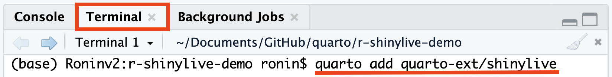

35 在Quarto中嵌入Shiny应用程序
本节主要介绍如何在Quarto文档中嵌入Shiny交互式应用程序，而无需依赖服务器。这是一个Quarto的全新特性，感谢Barret Schloerke等人开发的shinylive包让这一特性得以实现，该包的第一个CRAN版本于2023年10月11日首次发布。
For writing online books (with Quarto), I’d like to be able to demonstrate concepts and results dynamically. To some extent, we can do this with
gganimate, but it is very limiting. We’d like to useshiny. At the 2023 posit conference, Joe Cheng unveiledshinylive-r, a tool to embed R andshinyinto a webpage using WebAssembly (aka Wasm) usingwebR.Shinylive is a serverless version of Shiny, which enables running Shiny applications in a web browser without needing a backend server. It was first introduced for Python during Posit Conf 2022 using WebAssembly and Pyodide, and its R version during the Posit Conf 2023 using WebR (引自：shinylive-r).
本节不会涉及Shiny包的教程，请在学习本节前确保已基本掌握Shiny的使用，Shiny官方提供了一个很好的Shiny入门指南，通过它可以对Shiny应用程序的开发有一个全局的了解。

视频教程：

Currently, there are three methods (or formats) to use Shinylive applications:
Render a Shiny app into HTML static file using the shinylive package
Host a Shiny app in Fiddle - a built-in web application to run Shiny R and Python applications
Embed Shiny app in Quarto documentation using the quarto-shinylive extension for Quarto (引自：shinylive-r)。
35.1 安装shinylive包
要首先Shiny应用程序的嵌入，需要依赖shinylive包，可以从CRAN直接安装该包：
install.packages("shinylive")35.2 建立Quarto Project
创建Quarto项目的方法详见 Section 31.1 。需要注意的是，shinylive 扩展程序必须在 Quarto 项目目录内使用，否则在尝试渲染文档时会报错。错误信息如下：
ERROR:
The shinylive extension must be used in a Quarto project directory
(with a _quarto.yml file).35.3 安装shinylive扩展程序
为Quarto安装shinylive扩展程序。在Rstudio终端（Terminal）面板中输入：
quarto add quarto-ext/shinylive
35.4 YAML设置
为了让Quarto能够调用Shiny应用程序，需要在Quarto文档的YAML设置中加上filters-shinylive命令，如下：
title: "Our first r-shinylive Quarto document!"
filters:
- shinylive
---35.5 编写Shiny程序
我们需要把Shiny程序的代码放到一个特殊的{shinylive-r}代码块内：
```{shinylive-r}
#| standalone: true
library(shiny)
# Define your Shiny UI here
ui <- fluidPage(
# Your UI components go here
)
# Define your Shiny server logic here
server <- function(input, output, session) {
# Your server code goes here
}
# Create and launch the Shiny app
shinyApp(ui, server)
```{shinylive-r}代码块必须包含 #| standalone: true，这表示代码代表了一个完整的独立 Shiny 应用程序。目前，我们需要把完整的Shiny应用程序的代码，包括ui、server等全部包括进一个代码块内。未来，Quarto可能会支持在一个qmd文档内的多个代码块内分别包含ui、server等结构。
35.6 渲染Quarto文档
编写好所有内容后，我们即可以通过点击“Render”按钮渲染嵌入了Shiny应用程序的Quarto文档了。渲染后，会在我们的Quarto项目根目录下生成一个_extensions文件夹，其结构如下：

35.7 发布Quarto文档
一旦制作完成了令人满意的Quarto文档，就可以GitHub Pages和Quarto Pub等通过多种途径发布您的作品了。后面，我们对如何发布GitHub Pages有详细的说明（ Chapter 32 ）。
更多关于shinylive的信息，参阅：R-shinylive app in Quarto!
35.8 案例
案例一
下面是一个来自Joe’s shiny app的示例：
```{shinylive-r}
#| standalone: true
#| viewerHeight: 600
library(shiny)
library(bslib)
# Define UI for app that draws a histogram ----
ui <- page_sidebar(
sidebar = sidebar(open = "open",
numericInput("n", "Sample count", 100),
checkboxInput("pause", "Pause", FALSE),
),
plotOutput("plot", width=1100)
)
server <- function(input, output, session) {
data <- reactive({
input$resample
if (!isTRUE(input$pause)) {
invalidateLater(1000)
}
rnorm(input$n)
})
output$plot <- renderPlot({
hist(data(),
breaks = 40,
xlim = c(-2, 2),
ylim = c(0, 1),
lty = "blank",
xlab = "value",
freq = FALSE,
main = ""
)
x <- seq(from = -2, to = 2, length.out = 500)
y <- dnorm(x)
lines(x, y, lwd=1.5)
lwd <- 5
abline(v=0, col="red", lwd=lwd, lty=2)
abline(v=mean(data()), col="blue", lwd=lwd, lty=1)
legend(legend = c("Normal", "Mean", "Sample mean"),
col = c("black", "red", "blue"),
lty = c(1, 2, 1),
lwd = c(1, lwd, lwd),
x = 1,
y = 0.9
)
}, res=140)
}
# Create Shiny app ----
shinyApp(ui = ui, server = server)
```#| standalone: true
#| viewerHeight: 600
library(shiny)
# Define UI ----
ui <- fluidPage(
# App title ----
titlePanel("Hello World!"),
# Sidebar layout with input and output definitions ----
sidebarLayout(
# Sidebar panel for inputs ----
sidebarPanel(
# Input: Slider for the number of bins ----
sliderInput(inputId = "bins",
label = "Number of bins:",
min = 5,
max = 50,
value = 30)
),
# Main panel for displaying outputs ----
mainPanel(
# Output: Histogram ----
plotOutput(outputId = "distPlot")
)
)
)
# Define server logic required to draw a histogram ----
server <- function(input, output) {
# Histogram of the Old Faithful Geyser Data ----
# with requested number of bins
# This expression that generates a histogram is wrapped in a call
# to renderPlot to indicate that:
#
# 1. It is "reactive" and therefore should be automatically
# re-executed when inputs (input$bins) change
# 2. Its output type is a plot
output$distPlot <- renderPlot({
x <- faithful$waiting
bins <- seq(min(x), max(x), length.out = input$bins + 1)
hist(x, breaks = bins, col = "#007bc2", border = "orange",
xlab = "Waiting time to next eruption (in mins)",
main = "Histogram of waiting times")
})
}
# Run the app ----
shinyApp(ui = ui, server = server)案例二
#| standalone: true
#| viewerHeight: 500
#| label: fig-shiny-spline
webr::install("ggplot2")
webr::install("htmltools") #<- only needed to use SVG images
ui <- fluidPage(
fluidRow(
column(8,
sliderInput(
"deg_free",
label = "Spline degrees of freedom:",
min = 3L, value = 3L, max = 8L, step = 1L
)
),
imageOutput("spline_contours", height = "400px")
)
)
server <- function(input, output, session) {
# ------------------------------------------------------------------------
# Input data from remote locations on GitHub
pred_path <-
paste(
"https://raw.githubusercontent.com",
"topepo", "shinylive-in-book-test",
"main", "predicted_values.RData",
sep = "/"
)
data_path <-
paste(
"https://raw.githubusercontent.com",
"topepo", "shinylive-in-book-test",
"main", "sim_val.RData",
sep = "/"
)
rdata_file <- tempfile()
download.file(pred_path, destfile = rdata_file)
load(rdata_file)
download.file(data_path, destfile = rdata_file)
load(rdata_file)
# Set some ranges for the plot
rngs <- list(A = c(-3.3, 3.3), B = c(-4.4, 4.4))
output$spline_contours <-
renderImage({
preds <- predicted_values[predicted_values$deg_free == input$deg_free,]
p <-
ggplot(preds, aes(A, B)) +
# Plot the validation set
geom_point(
data = sim_val,
aes(col = class, pch = class),
alpha = 1 / 2,
cex = 3
) +
# Show the class boundary
geom_contour(
aes(z = .pred_one),
breaks = 1 / 2,
linewidth = 3 / 2,
col = "black"
) +
# Formatting
lims(x = rngs$A, y = rngs$B) +
theme_bw() +
theme(legend.position = "top")
file <-
htmltools::capturePlot(
print(p),
tempfile(fileext = ".svg"),
grDevices::svg,
width = 4,
height = 4
)
list(src = file)
},
deleteFile = TRUE)
}
shinyApp(ui = ui, server = server)